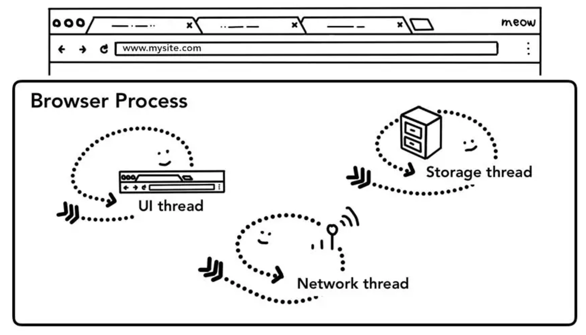
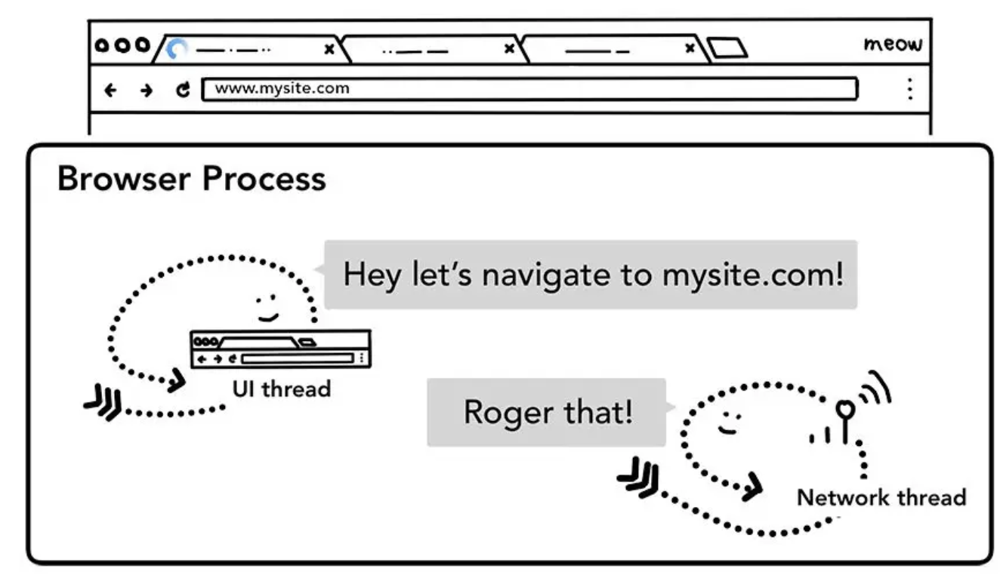
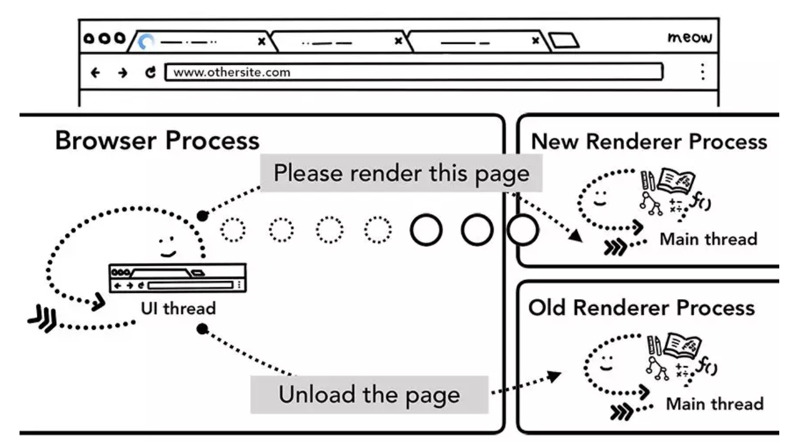
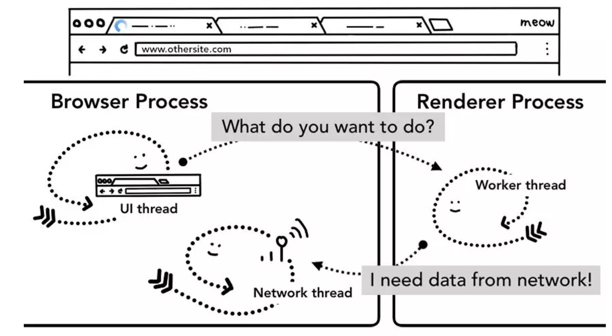
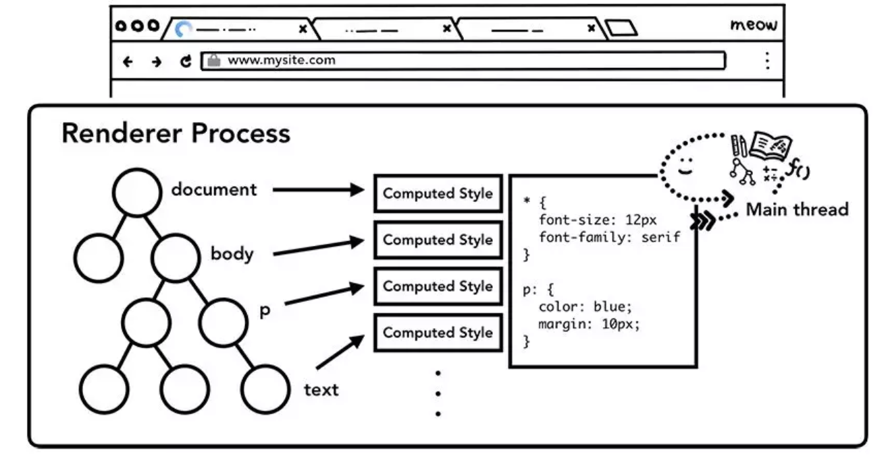
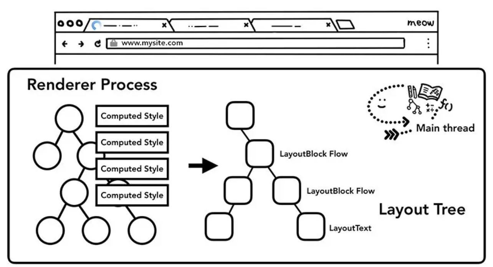
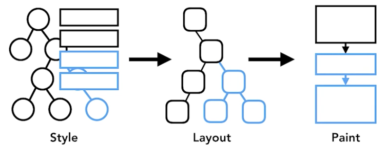
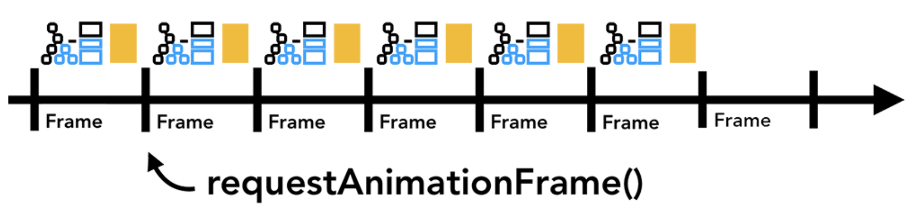
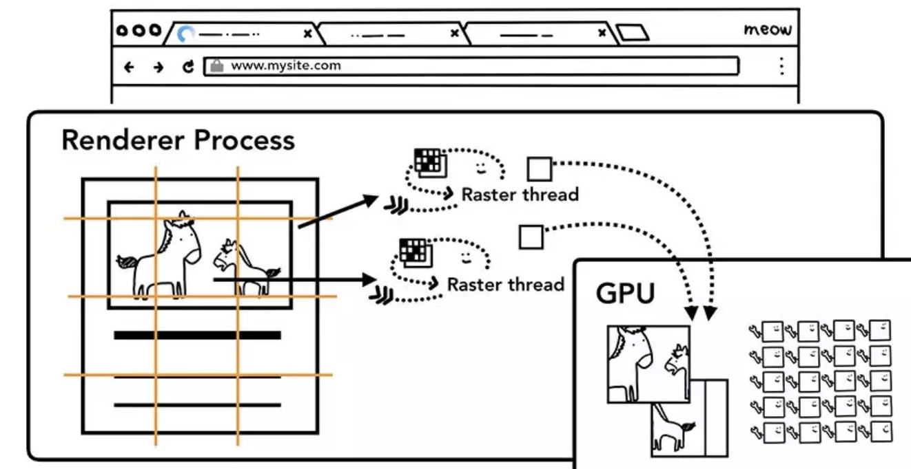

- 进程和线程在浏览器内的分布
- 进程和线程怎样配合展现页面
- renderer进程内部实现
- 处理用户交互
 分配进程
分配进程
 进程通信
进程通信
chrome
- browser进程
- 负责地址栏，书签栏，前进后退按钮等
- 负责处理浏览器的一些不可见的底层操作，如网络请求和文件访问
- Renderer进程
- Plugin进程
- GPU进程
 - 不同进程负责的浏览器区域示意图
- 不同进程负责的浏览器区域示意图
 chrome进程查看
chrome进程查看
 多进程优点
多进程优点
 chrome根据不同硬件分配进程·
chrome根据不同硬件分配进程·
iframe渲染
- Meltdown and Spectre: 读取本进程甚至其他进程内存空间(依赖高精度 timing)
- site Isolation 机制允许在同一个 Tab 下的跨站 iframe 使用单独的进程来渲染，这样会更为安全。chrome67开始默认使用。
2. 进程和线程怎样配合展现页面
浏览器进程对不同线程做分配 
How page shows?
在浏览器地址栏中输入 url 到页面展现的短短时间内浏览器究竟做了什么?
 判断是query还是URL？
判断是query还是URL？
 UI thread 通知 Network thread 加载相关信息
 收到 Network thread 返回的数据后，UI thread 查找相关的渲染进程
收到 Network thread 返回的数据后，UI thread 查找相关的渲染进程
 Browser Process 和 Renderer Process 通过 IPC 通信，请求 Renderer Process 渲染页面
Browser Process 和 Renderer Process 通过 IPC 通信，请求 Renderer Process 渲染页面
 Renderer Process 发送 IPC 消息通知 browser process 页面已经加载完成
Renderer Process 发送 IPC 消息通知 browser process 页面已经加载完成
 浏览器进程发送 IPC 消息给渲染进程，通知要离开当前网站了
浏览器进程发送 IPC 消息给渲染进程，通知要离开当前网站了
 浏览器进程发送 IPC 消息到新的渲染进程通知渲染新的页面，同时通知旧的渲染进程卸载
 Service Worker 依据具体情形做处理
3. renderer进程
- 主线程 Main thread
- worker线程 Worker thread
- 合成线程 Compositor thread
- 光栅线程 Raster thread
 渲染进程包含的线程
渲染进程包含的线程
渲染流程
- 构建 DOM (DOM树)
- 加载次级的资源
- JS 的下载与执行(
async ,defer)
- 样式计算
- 获取布局
- 绘制各元素
- 合成帧
 渲染进程主线程计算每一个元素节点的最终样式值
 主线程遍历 DOM 及 对应元素的样式，构建出布局树
更新渲染管道是昂贵的

 DOM+Style, Layout, and Paint trees in order it is generated
 Animation frames on a timeline
Animation frames on a timeline
 Animation frames on a timeline, but one frame is blocked by JavaScript
Animation frames on a timeline, but one frame is blocked by JavaScript
 Smaller chunks of JavaScript running on a timeline with animation frame
 栅格线程会栅格化每一个磁贴并存储在 GPU 显存中
4.浏览器对事件的处理
- 在浏览器的看来，用户的所有手势都是输入，鼠标滚动，悬置，点击等等都是
- browser进程获取事件及位置，通知renderer进程
- renderer进程找到事件对象并执行绑定的相关处理
 涉及 non-fast scrollable region 的事件，合成器线程会通知主线程进行相关处理
涉及 non-fast scrollable region 的事件，合成器线程会通知主线程进行相关处理
 由于事件绑定在最顶部，整个页面都成为了 non-fast scrollable region 处理：
由于事件绑定在最顶部，整个页面都成为了 non-fast scrollable region 处理： passive: true
 Chrome 会合并连续事件到下一帧触发 - getCoalescedEvents API 来获取组合的事件
Chrome 会合并连续事件到下一帧触发 - getCoalescedEvents API 来获取组合的事件
 合成事件api
合成事件api


 - 不同进程负责的浏览器区域示意图
- 不同进程负责的浏览器区域示意图


 收到 Network thread 返回的数据后，UI thread 查找相关的渲染进程
收到 Network thread 返回的数据后，UI thread 查找相关的渲染进程 Browser Process 和 Renderer Process 通过 IPC 通信，请求 Renderer Process 渲染页面
Browser Process 和 Renderer Process 通过 IPC 通信，请求 Renderer Process 渲染页面 Renderer Process 发送 IPC 消息通知 browser process 页面已经加载完成
Renderer Process 发送 IPC 消息通知 browser process 页面已经加载完成 浏览器进程发送 IPC 消息给渲染进程，通知要离开当前网站了
浏览器进程发送 IPC 消息给渲染进程，通知要离开当前网站了 渲染进程包含的线程
渲染进程包含的线程
 Animation frames on a timeline
Animation frames on a timeline Animation frames on a timeline, but one frame is blocked by JavaScript
Animation frames on a timeline, but one frame is blocked by JavaScript 涉及 non-fast scrollable region 的事件，合成器线程会通知主线程进行相关处理
涉及 non-fast scrollable region 的事件，合成器线程会通知主线程进行相关处理 由于事件绑定在最顶部，整个页面都成为了 non-fast scrollable region 处理：
由于事件绑定在最顶部，整个页面都成为了 non-fast scrollable region 处理：  Chrome 会合并连续事件到下一帧触发 - getCoalescedEvents API 来获取组合的事件
Chrome 会合并连续事件到下一帧触发 - getCoalescedEvents API 来获取组合的事件